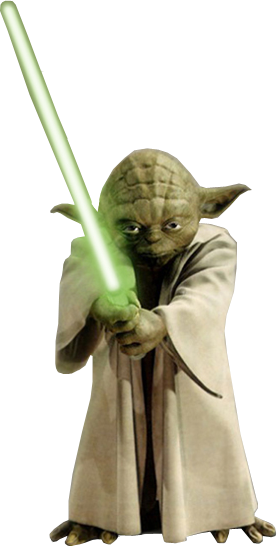

Hey jij!
1.5Wil je leren hoe jekoe1coole effecten zoals deze kan
maken met jQuery?
Dat en nog veel meer leer je in deze cursus1 * Events opsporen en afhandelen (muisklik, hover) .5 * Effects (fade, slide, toggle) en animatie.5 * Plugins (zoals deze) selecteren en implementeren.5 * Externe data inlezen (JSON en AJAX).5
1.5Wat verwachten wij van jou? * Basiskennis HTML en CSS.5 * Je weet dat je uit je fouten alleen maar kan leren.5 * Je bent niet bang om somsheeeeeeeeelemaam opnieuw helemaal opnieuw
te beginnen. .5
* Je bent een volhouder.250 Soms lijk je niet vooruit te komen.
10Maar dan ben je ineens ben je vertrokken!
1.5Wil je leren hoe je
Dat en nog veel meer leer je in deze cursus1 * Events opsporen en afhandelen (muisklik, hover) .5 * Effects (fade, slide, toggle) en animatie.5 * Plugins (zoals deze) selecteren en implementeren.5 * Externe data inlezen (JSON en AJAX).5
1.5Wat verwachten wij van jou? * Basiskennis HTML en CSS.5 * Je weet dat je uit je fouten alleen maar kan leren.5 * Je bent niet bang om soms
